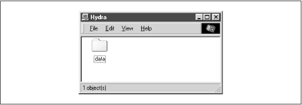
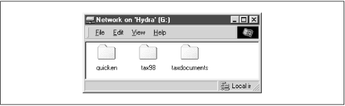
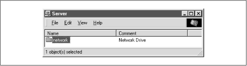

Using Samba
Robert Eckstein, David Collier-Brown, Peter Kelly1st Edition November 1999
1-56592-449-5, Order Number: 4495
416 pages, $34.95
|
|
|
|
|
Using SambaRobert Eckstein, David Collier-Brown, Peter Kelly1st Edition November 1999 1-56592-449-5, Order Number: 4495 416 pages, $34.95 |
4.5 Disk Share Configuration
We mentioned in the previous section that there were no disk shares on the
hydraserver. Let's continue with the configuration file and create an empty disk share called [data]. Here are the additions that will do it:[global] netbios name = HYDRA server string = Samba %v on (%L) workgroup = SIMPLE [data] path = /export/samba/data comment = Data Drive volume = Sample-Data-Drive writeable = yes guest ok = yesThe
[data]share is typical for a Samba disk share. The share maps to a directory on the Samba server: /export/samba/data. We've also provided a comment that describes the share as aDataDrive, as well as a volume name for the share itself.The share is set to writeable so that users can write data to it; the default with Samba is to create a read-only share. As a result, this option needs to be explicitly set for each disk share you wish to make writeable.
You may have noticed that we set the
guestokparameter toyes. While this isn't very security-conscious, there are some password issues that we need to understand before setting up individual users and authentication. For the moment, this will sidestep those issues and let anyone connect to the share.Go ahead and make these additions to your configuration file. In addition, create the /export/samba/data directory as root on your Samba machine with the following commands:
#mkdir /export/samba/data#chmod 777 /export/samba/dataNow, if you connect to the
hydraserver again (you can do this by clicking on its icon in the Windows Network Neighborhood), you should see a single share listed entitleddata, as shown in Figure 4.4. This share should also have read/write access to it. Try creating or copying a file into the share. Or, if you're really feeling adventurous, you can even try mapping a network drive to it!Figure 4.4: The initial data share on the Samba server
4.5.1 Disk Share Configuration Options
The basic Samba configuration options for disk shares previously introduced are listed in Table 4.4.
Table 4.4: Basic Share Configuration Options Option
Parameters
Function
Default
Scope
path (directory)string (fully-qualified pathname)
Sets the Unix directory that will be provided for a disk share or used for spooling by a printer share
/tmpShare
guest ok (public)boolean
If set to
yes, authentication is not needed to access this share
noShare
commentstring
Sets the comment that appears with the share
None
Share
volumestring
Sets the volume name: the DOS name of the physical drive
Share name
Share
read onlyboolean
If
yes, allows read only access to a share.
yesShare
writeable (write ok)boolean
If
no, allows read only access to a share.
noShare
4.5.1.1 path
This option, which has the synonym
directory, indicates the pathname at the root of the file or printing share. You can choose any path on the Samba server, so long as the owner of the Samba process that is connecting has read and write access to that directory. If the path is for a printing share, it should point to a temporary directory where files can be written on the server before being spooled to the target printer ( /tmp and /var/spool are popular choices). If this path is for a disk share, the contents of the folder representing the share name on the client will match the content of the directory on the Samba server. For example, if we have the following disk share listed in our configuration file:[network] path = /export/samba/network writable = yesguest ok = yesAnd the contents of the directory /usr/local/network on the Unix side are:
$ls -al /export/samba/networkdrwxrwxrwx 9 root nobody 1024 Feb 16 17:17 . drwxr-xr-x 9 nobody nobody 1024 Feb 16 17:17 .. drwxr-xr-x 9 nobody nobody 1024 Feb 16 17:17 quicken drwxr-xr-x 9 nobody nobody 1024 Feb 16 17:17 tax98 drwxr-xr-x 9 nobody nobody 1024 Feb 16 17:17 taxdocumentsThen we should see the equivalent of Figure 4.5 on the client side.
Figure 4.5: Windows client view of a network filesystem specified by path
4.5.1.2 guest ok
This option (which has an older synonym
public) allows or prohibits guest access to a share. The default value isno. If set toyes, it means that no username or password will be needed to connect to the share. When a user connects, the access rights will be equivalent to the designated guest user. The default account to which Samba offers the share isnobody. However, this can be reset with theguestaccountconfiguration option. For example, the following lines allow guest user access to the[accounting]share with the permissions of the ftp account:[global] guest account = ftp [accounting] path = /usr/local/account guest ok = yesNote that users can still connect to the share using a valid username/password combination. If successful, they will hold the access rights granted by their own account and not the guest account. If a user attempts to log in and fails, however, he or she will default to the access rights of the guest account. You can mandate that every user who attaches to the share will be using the guest account (and will have the permissions of the guest) by setting the option
guestonly=yes.4.5.1.3 comment
The
commentoption allows you to enter a comment that will be sent to the client when it attempts to browse the share. The user can see the comment by listing Details on the share folder under the appropriate computer in the Windows Network Neighborhood, or type the commandNETVIEWat an MS-DOS prompt. For example, here is how you might insert a comment for a[network]share:[network] comment = Network Drive path = /export/samba/networkThis yields a folder similar to Figure 4.6 on the client side. Note that with the current configuration of Windows, this comment will not be shown once a share is mapped to a Windows network drive.
Figure 4.6: Windows client view of a share comment
Be sure not to confuse the
commentoption, which documents a Samba server's shares, with theserverstringoption, which documents the server itself.4.5.1.4 volume
This option allows you to specify the volume name of the share as reported by SMB. This normally resolves to the name of the share given in the smb.conf file. However, if you wish to name it something else (for whatever reason) you can do so with this option.
For example, an installer program may check the volume name of a CD-ROM to make sure the right CD-ROM is in the drive before attempting to install it. If you copy the contents of the CD-ROM into a network share, and wish to install from there, you can use this option to get around the issue:
[network] comment = Network Drive volume = ASVP-102-RTYUIKA path = /home/samba/network4.5.1.5 read only and writeable
The options
readonlyandwriteable(orwriteok) are really two ways of saying the same thing, but approached from opposite ends. For example, you can set either of the following options in the[global]section or in an individual share:read only = yes writeable = noIf either option is set as shown, data can be read from a share, but cannot be written to it. You might think you would need this option only if you were creating a read-only share. However, note that this read-only behavior is the default action for shares; if you want to be able to write data to a share, you must explicitly specify one of the following options in the configuration file for each share:
read only = no writeable = yesNote that if you specify more than one occurrence of either option, Samba will adhere to the last value it encounters for the share.
 |
 |
 |
| 4.4 Server Configuration |
 | 4.6 Networking Options with Samba |
Back to: Using Samba
© 1999, O'Reilly & Associates, Inc.